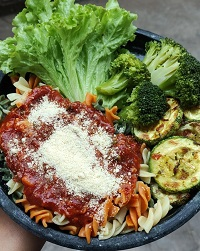
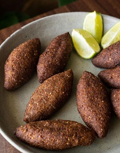

Perfis nas redes sociais que ensinam receitas e falam sobre o movimento vegano:
|

Reprodução do instagram @sapavegana Sapa Vegana |
|
|

Reproduçaõ do instagram @luisa_motta Larica Vegana |
O site do Veganismo Periférico contém informações sobre o que é um veganismo acessível.
Clique aqui para acessar o site